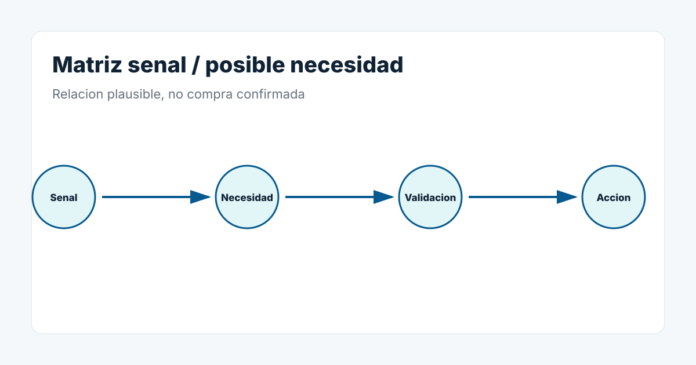

Senales utiles para este perfil
- empresas por sector y proceso.
- nuevas plantas.
- ampliaciones.
- nuevas lineas.
- ayudas.
- aumentos de capacidad.
- cambios de producto.
- expansion internacional.
Como lo usa InduRadar
InduRadar cruza sector, proceso, geografia, fuente, senal y momento comercial para localizar situaciones que merecen investigacion o seguimiento.
Limite importante
Una senal no confirma una compra. Sirve para priorizar donde mirar, que validar y que accion comercial puede tener sentido.